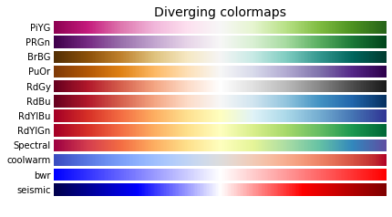

July 15, 2022: Selecting a subset of ROIs and colormaps
Contents
July 15, 2022: Selecting a subset of ROIs and colormaps¶
import os
import sys
from os.path import join as pjoin
import numpy as np
import pandas as pd
import pickle, random
from tqdm import tqdm
from scipy.stats import zscore
# plotting
import matplotlib as mpl
import matplotlib.pyplot as plt
plt.rcParamsDefault['font.family'] = "sans-serif"
plt.rcParamsDefault['font.sans-serif'] = "Arial"
plt.rcParams['font.size'] = 14
plt.rcParams["errorbar.capsize"] = 0.5
# main dirs
proj_dir = pjoin(os.environ['HOME'], 'network_dynamics')
results_dir = f"{proj_dir}/results"
month_dir = f"{proj_dir}/nb/jul22"
# folders
sys.path.insert(0, proj_dir)
import helpers.dataset_utils as dataset_utils
ROI ordering¶
class ARGS(): pass
args = ARGS()
args.up_roi_idxs = np.array(
# upwards time series
[6, 7] + # dlPFC
list(range(12, 20)) + # ACC, ant.-, post.-MCC, pre-SMA
list(range(47, 51)) + # ant. ventral-, ant. dorsal-Insula
[53, 54] + # BST
[69, 70] + # ant/inf Thalamus
list(range(73, 79)) + # med/post-, ant/lat-, ant/med-Thalamus,
[79, 80] # PAG
)
args.down_roi_idxs = np.array(
# downwards time series
list(range(0, 6)) + # OFC, vmPFC
list(range(20, 25)) + # PCC
list(range(59, 63)) + # ant.-, body-Hippocampus
[83, 84] # Crusl-krienen
)
args.roi_idxs = np.concatenate([args.up_roi_idxs, args.down_roi_idxs])
args.num_rois = len(args.roi_idxs)
with open(f"{proj_dir}/data/max/exploratory_data_roi_indices.pkl", 'wb') as f:
pickle.dump([args.up_roi_idxs, args.down_roi_idxs, args.roi_idxs], f)
Colormap¶
# copied code from matplotlib
cmaps = {}
gradient = np.linspace(0, 1, 256)
gradient = np.vstack((gradient, gradient))
def plot_color_gradients(category, cmap_list):
# Create figure and adjust figure height to number of colormaps
nrows = len(cmap_list)
figh = 0.35 + 0.15 + (nrows + (nrows - 1) * 0.1) * 0.22
fig, axs = plt.subplots(nrows=nrows + 1, figsize=(6.4, figh))
fig.subplots_adjust(top=1 - 0.35 / figh, bottom=0.15 / figh,
left=0.2, right=0.99)
axs[0].set_title(f'{category} colormaps', fontsize=14)
for ax, name in zip(axs, cmap_list):
ax.imshow(gradient, aspect='auto', cmap=plt.get_cmap(name))
ax.text(-0.01, 0.5, name, va='center', ha='right', fontsize=10,
transform=ax.transAxes)
# Turn off *all* ticks & spines, not just the ones with colormaps.
for ax in axs:
ax.set_axis_off()
# Save colormap list for later.
cmaps[category] = cmap_list
category = 'Diverging'
cmap_list = ['PiYG', 'PRGn', 'BrBG', 'PuOr', 'RdGy', 'RdBu', 'RdYlBu',
'RdYlGn', 'Spectral', 'coolwarm', 'bwr', 'seismic']
plot_color_gradients(category,
cmap_list)

plt.get_cmap(cmap_list[5])
RdBu
![RdBu colormap]( "RdBu")
under
bad
over
looks great!¶
import cmasher as cmr
plt.get_cmap(cmr.iceburn)
iceburn
![iceburn colormap]( "iceburn")
under
bad
over